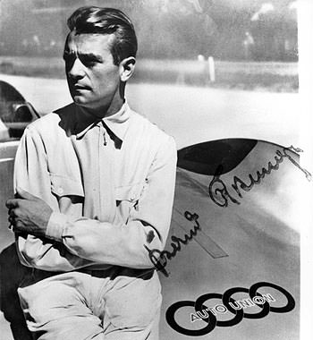

不僅以搭載quattro智慧型恆時四輪傳動系統的Audi quattro，幾乎橫掃了1980年代的WRC賽事，創辦人Dr.August Horch更早在1912年時，就已透過Austrian Alpine Rally (奧地利阿爾卑斯山越野拉力) 賽事並拿下冠軍、打響了品牌名號；而且百年來在賽車場上贏過許多榮耀，近幾年更一直是Le Mans場上的常勝軍，所以這篇我們想帶讀者們一起回顧Audi百年來在WRC之外的參賽歷史。
三連霸初試啼聲，輝煌的GP戰果
你可能知道，1868年10月12日誕生於德國Winningen的Dr. August Horch是科班出身的工程師，且曾在Mercedes-Benz創辦人Karl Benz手下任職，並於1899年自立門戶、成立Audi前身：A. Horch & Cie公司，著手研發自製車輛；但較少人知道的是，其實他還是一名稱職的賽車手，曾經連續3年拿下當時最嚴苛之拉力賽：Austrian Alpine Rally (奧地利阿爾卑斯山越野拉力) 的冠軍。
1901年便設計出Audi品牌第一輛汽車：The first Horch的Dr. August Horch，在1910年成立Audiwerke GmbH後，為了打開「Audi」之名號，1912年時、特別親自駕駛了一輛鮮黃色的Audi 14/35 ps，投入了需在7天內完成3,000公里總里程、路線從維也納開始，一路穿越隸屬阿爾卑斯山脈之Karawanken山脈、Dolomites山脈、Stelvio賽道和Hohen Tauern山峰，最後再回到維也納的 Austrian Alpine Rally；而且7天之後，Dr. August Horch與他所駕駛的Audi 14/35 ps，不但是80輛參賽車中的19輛完賽車之一，最後更以無失分的表現，拿下了象徵最高榮譽的「阿爾卑斯挑戰獎」，且連續3年奪得這個獎項，成為當時最受注目的賽車製造廠。
1934年、在Audi、Horch、DKW與Wanderer四家公司合併成Auto Union AG短短2年之後，它們請來了Porsche創辦人：Dr.Ferdinand Porsche，替這個剛完成融合的車廠，設計了全球第一款中置引擎賽車：Auto Union Type A，將擁有295匹馬力的6缸引擎、變速箱置於車手後方，獲得更平均的車身配重，並在車手Hans Stuck的操駕下，馬上在德國、瑞士和捷克Grand Prix賽事中贏得3場重要的勝利，且在歐洲的地方登山賽中也大有斬獲。
Auto Union Type A 的勝利，當然也延續到了它的進化版本：Auto Union Type C，於是在1935至1937年間、這款賽車在 Hans Stuck、Ernst von Delius、Tazio Nuvolari、Bernd Rosemeyer與Achille Varzi等車手的駕駛下，一共帶回了25座Grand Prix的冠軍獎盃、幾乎囊括當時所有獎項。
|  |
甚至在1937 Grand Prix賽季即將結束前，曾拿下多次Grand Prix單站冠軍的傳奇車手Bernd Rosemeyer還在德國賽車協會ONS所舉辦的活動中，以Auto Union Type C裝上Auto Union欲參加Avus極速賽事所打造的Streamline car，在德國一般Autobahn無限速公路上、跑出令人吃驚的極速406.3公里成績。可惜的是，1938年1月、當Bernd Rosemeyer想再次打破由自己所寫下的紀錄時，卻在高速行駛途中遭遇橫向亂流、發生車毀人亡的意外，而Auto Union也立刻宣佈停止參與這類只是為破紀錄而辦的比賽。
不過，在1934年到二次世界大戰爆發前的1939年為止，短短5年內、Auto Union便已獲得14場Grand Prix單站賽事的勝利，以及無數地方賽事的冠軍獎盃，成績非常亮眼，是Grand Prix史上前無古人的輝煌紀錄。
轉戰爬山賽，惡路上的王者
1980年、Audi發表全球首款搭載quattro智慧型恆時四輪傳動系統的雙門轎跑車：Audi quattro後，不但陸續以Audi quattro、Audi quattro A2與Audi Sport quattro S1等賽車，橫掃了1981至1985年的WRC (World Rally Champion) 世界越野拉力錦標賽，創下了不敗的「quattro王朝」。在刺激度毫不遜色於WRC的登山車賽中，Audi與quattro智慧型恆時四輪傳動系統的結合，也寫下了許多紀錄。
離開塵土飛揚的WRC世界後，Audi馬上將目標鎖定在性質相近、位於美國Colorado州的Pikes Peak International Hill Climb (Pikes Peak國際登山拉力賽)，並立刻讓法國籍女車手Michèle Mouton在海拔4,300公尺的Pikes Peak山頂、登上1985年Pikes Peak國際登山拉力賽的冠軍。
1987年、在傳奇拉力車手Walter Röhrl出神入化的駕駛下，一輛改裝過後的Audi Sport quattro S1賽車，不但拿下了當年Pikes Peak國際登山拉力賽的冠軍，並打破這項比賽的成績紀錄，以實戰結果、證明了Audi與quattro智慧型恆時四輪傳動系統的是惡劣地形上的完美結合。
Le Mans 24小時耐久賽的常勝軍
與一級方程式大賽Monte Carlo分站、美國Indianapolis 500英哩大賽並稱「全球三大賽事」的法國Le Mans 24小時耐久賽，是全球難度最高的耐久賽，每次比賽時間長達24小時、總里程數約5,000公里，不但測試著車輛的速度與耐久性，也考驗著車手的體力。
而在稱霸Grand Prix大賽、WRC世界越野拉力錦標賽與 Pikes Peak國際登山拉力賽後，1999年、Audi決心挑戰這個受歡迎程度與一級方程式、WRC齊名的賽事，並針對賽事規則，量身打造了R8R賽車。

Le Mans 24小時耐久賽始於1923年，每年6月在法國Le Mans舉辦，每年都會吸引超過25萬名現場觀眾，以及數百萬電視觀眾共同觀賞。而Audi自從1999年以R8R賽車投入Le Mans 24小時耐久賽Prototype原型賽車組別、並於1年後、參賽的三輛車便囊括2000年賽事的前三名後，至今除了2003年與2009年兩次與冠軍獎盃失之交臂外，2000至2011年中、11屆的Le Mans 24小時耐久賽裡，Audi總共抱回10座總冠軍獎盃，成績出色。
而且除了在Le Mans 24小時耐久賽中表現讓人驚艷外，Audi所打造的R8R、R10 TDI及R15 TDI，在所有其它於美洲和歐洲賽道上所舉辦的耐久賽事中，成績也非常出眾，而且從來沒一輛賽車是因為引擎出現故障問題而退賽。
至於Audi的2011年Le Mans 24小時耐久賽參賽車，則是搭載賽例規定之3.7升V6 TDI引擎與碳纖維單體式開艙式車體的R18 TDI，且已在2011年6月11日下午、在Marcel Fässler、André Lotterer與Benoît Tréluyer三位車手的輪番駕駛下，率先通過終點、奪下2011年第79屆Le Mans 24小時耐久賽的勝利，同時也替Audi寫下了在Le Mans 24小時耐久賽中拿下10座冠軍獎盃的紀錄。


-

灌注賽道精神-認識Audi Sport品牌
提到Audi當家超跑R8，相信沒有人會忽略它的存在，Audi憑什麼打造出這世界上首屈一指的超跑呢？答案就在Audi Sport GmbH工廠裡；這裡就像一座神聖殿堂...
-

純粹的賽道魂魄-Audi RS家族車款介紹
Audi旗下性能最強悍的兵團，就屬R8及RS Models家族車款，為求最完美的性能表現，這些車款均交由Audi Sport GmbH工廠製作，未來還會導入RS4 Avant、RS5 Coupe及TT RS三款...
-

舒適與性能，諧和共存-Audi S家族車款介紹
許多人渴望擁有性能，但程度上因人而異，前一篇介紹的Audi RS家族車款是為極度熱血份子所打造，至於那些想要兼顧日常實用與舒適性...